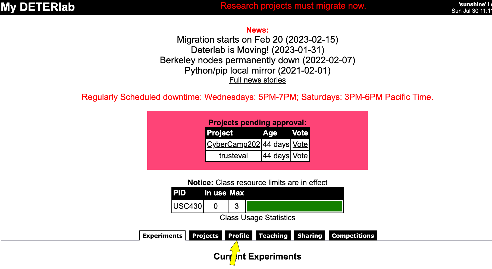
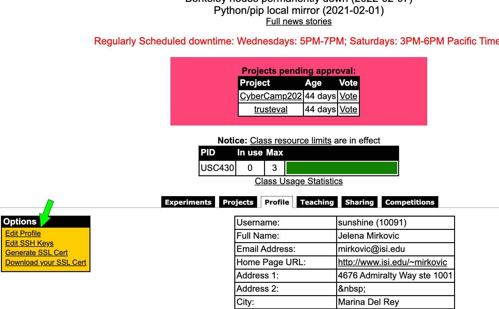
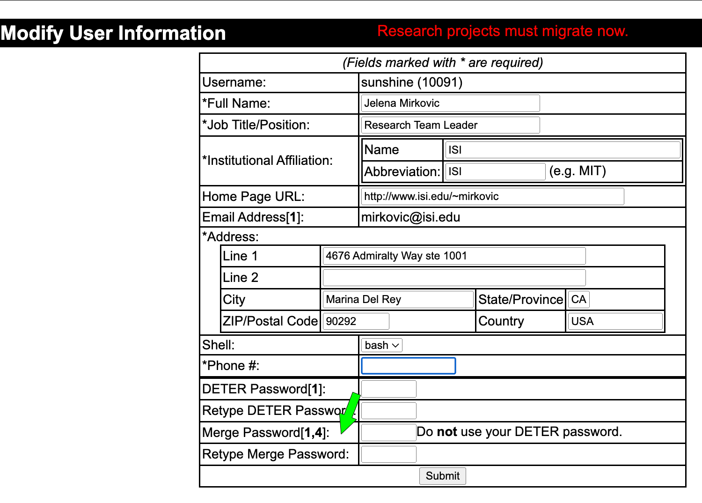

Note
This page is updated to show the workflow with our new platform.
Migration Instructions
At this time all projects must migrate to our new platform. Class projects can continue to use this user interface for class management purposes. All experimentation will occur on our new platform and old machines will be decomissioned. Instructions below show how to migrate existing projects to our new platform.
Migrating Class Projects
- Edit your User Profile to set up Merge password (it is currently set at random, please reset it to a string of your choosing if you wish). See illustrations below.
Access your profile:

Edit profile:

Set up Merge password:
 2. Click on Teaching tab, then choose your class and click on Migrate Class from the left menu.
To migrate your existing class materials please see our guidelines here.
After you have migrated your class you can continue using this interface to manage your materials and students. Students will use our new platform to perform experiments. Your, TAs' and students' accounts will be synchronized between the two platforms (same usernames and passwords). You can read more about the new platform and how students use it here.
Migrating Research Projects
- Carefully read Merge documentation
- Apply for account on the new DeterLab here. Please select a password that is strong but easy for you to remember and type. For example, passwords that contain 5+ words significant to you should work.
- Wait for approval, which should arrive via email
- Log into
users.deterlab.netand edit.ssh/configfile by following instructions here. - Set up an XDC (experiment development container), which will serve as your gateway into the new DeterLab, by following the instructions here. If everything is set up correctly, you should be able to SSH into your first XDC by typing on
users.deterlab.netthe following commandssh <xdcname>-<yourusername>. There is no need to create new experiments at this step, although you are welcome to try it. - Migrate your projects, experiments and data by following instructions below this list
- Put in a DeterLab ticket to let us know you have migrated your items.
- From this point on please do not use old DeterLab anymore.
To migrate a project X using your new username U, type on users.deterlab.net:
migrate U X (you will be prompted for password)
Experiments in your project will be automatically converted and migrated to a new project on our new infrastructure. Project and experiment naming conventions have changed, so you may notice some differences. New project and experiment names must be all lower-case and alphanumeric only. In addition to this, current OS images on the new infrastructure differ from the existing OS images, and there is currently no support for startup commands. Thus, during experiment conversion OS, hardware and startup directives are skipped.
You will also need to migrate any data in your personal user directory, which you want to keep. To do so, create folder newdeter in your home directory, and move into it all files and folders that you want to keep. Then run:
migrate U (you will be prompted for password)
Note
We can only support migration of up to 10 GB per user or per project. Please delete any large files that you will not need going forward. If you need more space, please contact us at testbed-ops@isi.deterlab.net
Migration FAQ
Who should migrate?
All research projects and users (project leaders and research students) should migrate to our new infrastructure by May 1st, 2023. Class users and projects can remain on the old infrastructure until summer 2023. They should plan to migrate over the summer. If you are project leader on DeterLab and you have both research and class projects, you should migrate your account and your research projects now.
What are the advantages of the new infrastructure?
There are multiple advantages to users from migrating to the new infrastructure:
- You will be able to request virtual machines, and thus run larger scale experiments.
- You should experience less resource contention. It will be easier to obtain resources.
- Experiments will be set up quickly - within seconds instead of minutes
- Experiment specification errors will be caught early, before resources are committed
- All experiments will have external access for software installation
What are the differences between the old and the new infrastructure?
- The new infrastructure is running a new software, called Merge, which is more stable, robust and modular than the old software.
- The new infrastructure has all new hardware - end servers and switches - and will be more stable.
- The new infrastructure has a new UI for experiment management (creation, swap in/out, termination)
- The new infrastructure has a new access process: you still SSH twice but the SSH process should be smoother
- The new infrastructure has a new topology definition language
Where can I learn more?
- Please read Merge documentation